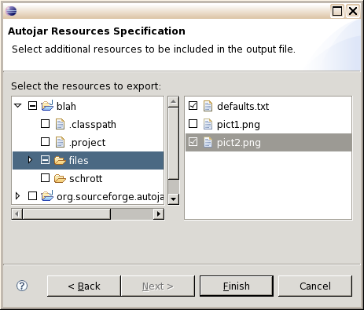

| Directly supplied files
Here, in contrast to the previous window, complete file paths are
selected. The files are added to the output, if not yet present.
No lookup is done.

If archives (.jar or .zip) are selected, they are not added themselves, but
the files they contain. In other words, they are expanded first.
After all inputs have been made, "Finish" starts the actual
Autojar action, and the log output appears in the console window.
Note: The files selected in this window are presently
not stored with the project. The next time the plugin is started
for this project, they have to be selected again.
|
 SourceForge project page
SourceForge project page
 File lookup
File lookup